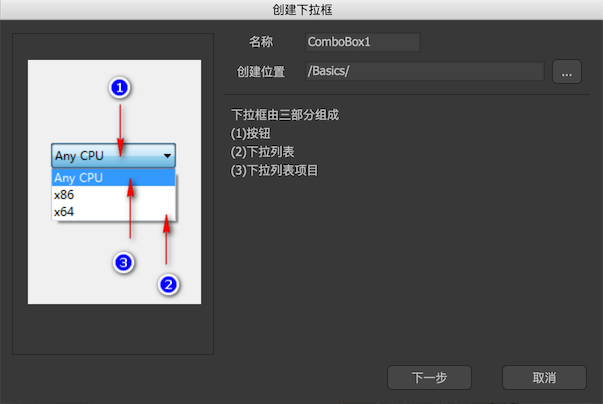
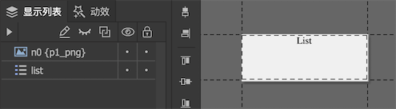
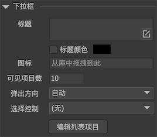

下拉框
创建下拉框
可以通过两种方式创建下拉框组件。
- 点击主菜单“资源”->“新建下拉框”，然后按照向导的提示一步步完成。

- 新建一个组件，然后在组件属性里选择扩展为“下拉框”。
设计属性
在组件编辑状态下，下拉框组件的属性面板是：

弹出组件下拉框在选项弹出时需要用到的组件。这个组件最基本的设计就是一个背景+一个列表。背景对容器组件做好宽高关联。列表需要命名为“list”，并设置好“项目资源”，一般来说，列表的“溢出处理”设置为“垂直滚动”。列表不需要建立任何关联。

当下拉框需要弹出下拉列表时，会将弹出组件的宽度自动设置成下拉框的宽度，然后填充列表数据，并按照“可见项目数量”的要求调整列表高度，最后显示出来。
制作说明
button下拉框也需要一个按钮控制器，因为他和按钮的形态是一样的。可以按设计按钮的方式设计下拉框。当下拉框被点击下拉时，“button”控制器将停留在“down”页，下拉列表收回后，“button”控制器回到“up”页或“over”页。title可以是普通文本，富文本，也可以是标签、按钮。icon可以是装载器，也可以是标签、按钮。实例属性
在舞台上选中一个下拉框组件，右边的属性面板列表出现：

标题设置的文本将赋值到标签组件内的“title”元件的文本属性。如果不存在“title”元件，则什么事都不会发生。图标设置的URL将赋值到标签组件内的“icon”元件的图标属性。如果不存在“icon”元件，则什么事都不会发生。可见项目数量下拉显示时最多显示的项目数量。例如，如果这里设置的值为10，而下拉框的数据有100条，那么下拉列表的视口会调整到只显示10条，其他需要滚动查看。弹出方向下拉列表的弹出方向。如果为自动，先尝试向下弹出，如果显示超出屏幕，再尝试向上弹出。选择控制可以绑定一个控制器。这样当下拉框选择发生改变时，控制器也同时跳转到相同索引的页面。反之亦然，如果控制器跳转到某个页面，那么下拉框也同时选定相同索引的项目。编辑列表项目点击后弹出对话框，可以编辑下拉列表的项目：
发布时清空发布时清空所有的items，也就是这里的设置内容仅作为编辑器内的预览用途。文本设置这个列表项目的标题。图标设置这个列表项目的图标。值设置这个列表项目的value属性，用途可参考下面API的说明。
GComboBox
我们可以在编辑器编辑下拉列表的项目，也可以用代码动态设置，例如：
GComboBox combo = gcom.GetChild("n1").asComboBox; |
下拉框选择改变时有通知事件：
//Unity/Cry/MonoGame |
点击空白处后弹出框会自动关闭，如果要获得这个关闭的通知，可以监听移出舞台的事件，例如：
//Unity/Cry |
如果要手工关闭弹出框：
GRoot.inst.HidePopup(); |